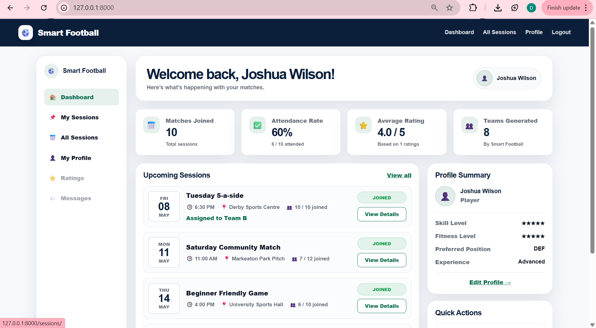
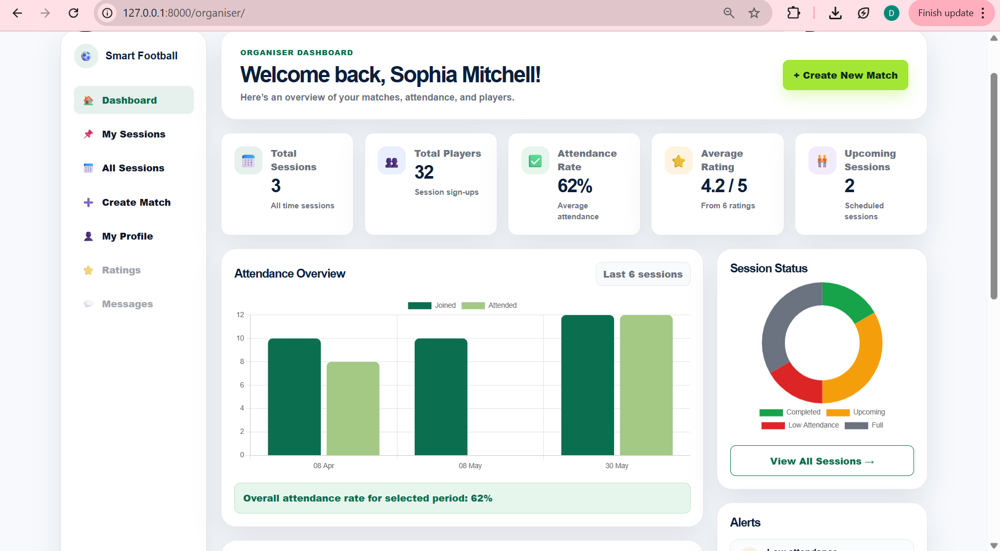
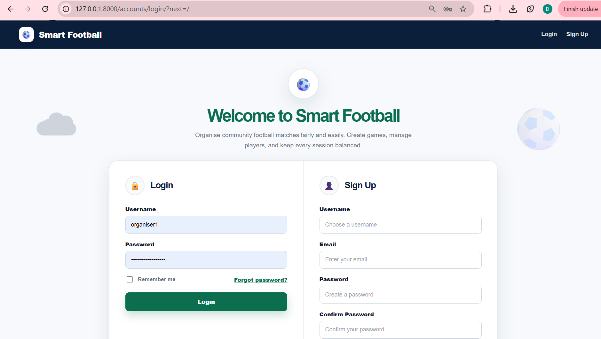
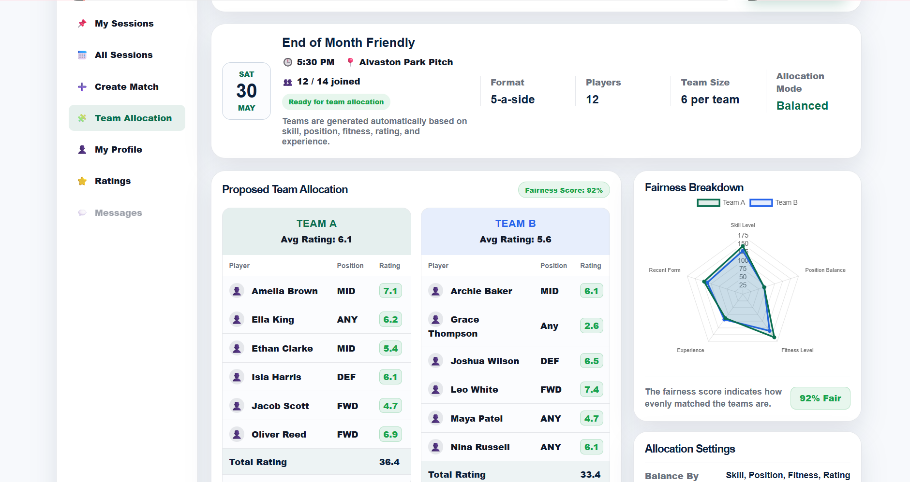
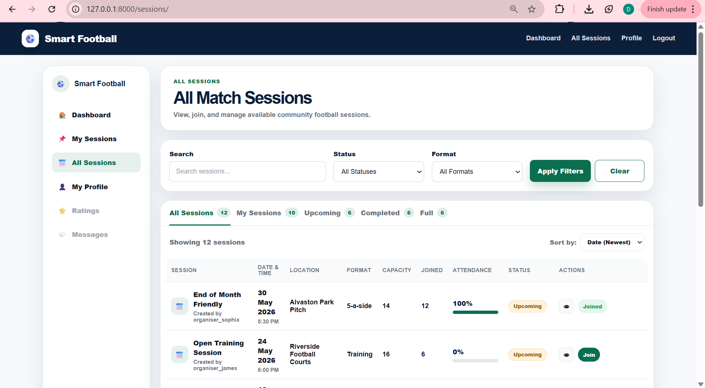
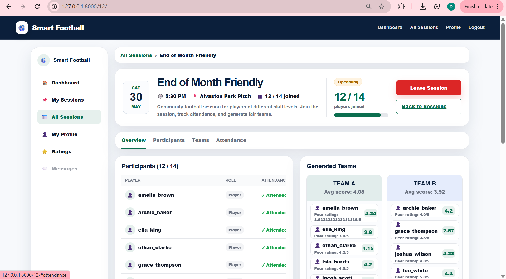
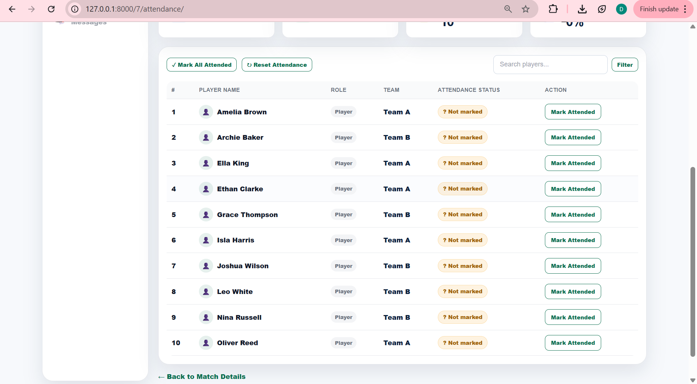
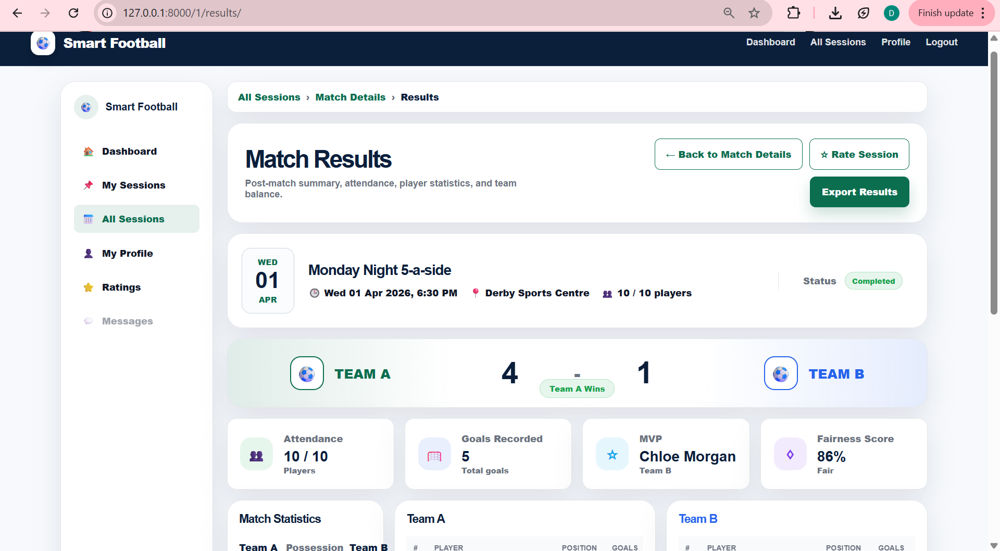

Project Overview
Smart Football was developed as my final-year BSc Computer Science dissertation project at the University of Derby, achieving a 75% First-Class grade. The application addresses the common problem of unevenly matched recreational football matches by calculating player metrics and automatically distributing teams equitably.
Built using Python, Django and SQLite, the platform manages user profiles, performance statistics and algorithmic team generation seamlessly.
Tech Stack & Specs
- 🐍 Python & Django Framework
- 🗄️ SQLite Database
- 📊 Algorithmic Team Balancing Logic
- 🏆 Grade: 75% (First-Class)
Application Screenshots
Click any image to view it full screen.

Player Dashboard: Overview of active sessions, attendance rates and individual profile metrics.

Organiser Dashboard: Match management controls, attendance analytics and session status charts.

Authentication: Secure login and registration portal for community players and organisers.

Team Allocation: Automated algorithmic balancing based on skill, position, fitness and ratings.

All Sessions: Search, filter and browse available community football matches.

Match Details: Detailed participant lists and generated team rosters for specific fixtures.

Attendance Management: Interface for tracking player attendance status post-match.

Match Results: Post-match summaries, goal statistics, MVP tracking and fairness scores.
Final-Year Dissertation Document
Read the complete academic documentation, architecture design and evaluation metrics for Smart Football.
Download Dissertation (PDF)